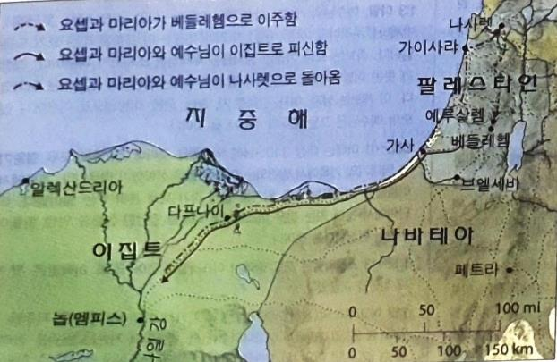

1예수님께서는 헤롯이 왕으로 있던 시대에 유대의 베들레헴이라는 마을에서 태어나셨습니다. 그 때, 동쪽 나라에서 몇 명의 박사들이 예루살렘으로 왔습니다.
2그들은 이렇게 물었습니다. "유대인의 왕으로 태어나신 아기가 어디 계십니까? 우리는 동쪽에서 그 아기의 별을 보고, 아기에게 경배하러 왔습니다."
3헤롯 왕은 이 소리를 듣고 깜짝 놀랐습니다. 예루살렘 사람들도 모두 놀랐습니다.
4헤롯은 모든 대제사장들과 율법학자들을 불러모으고, 그리스도가 어디에서 태어나실 것인지 물었습니다.
5그들은 대답하였습니다. "유대의 베들레헴이란 마을입니다. 예언자들이 이렇게 기록해 놓았습니다.
6'그러나 유대 지방에 있는 너 베들레헴아,너는 유대의 통치자들 가운데서 결코 작지 않다. 네게서 한 통치자가 나올 것이다. 그가 나의 백성 이스라엘을 돌볼 것이다.' "
7그 소리를 듣고 헤롯은 박사들을 조용히 불렀습니다. 그리고 별이 처음 나타난 때를 알아 냈습니다.
8그리고 박사들을 베들레헴으로 보내면서 말했습니다. "가서 아기를 잘 찾아보시오. 아기를 찾으면 나에게도 알려 주시오. 그러면 나도 가서 그 아기에게 경배하겠소."
9박사들은 왕의 말을 듣고 출발했습니다. 그러자 동쪽 나라에서 보았던 바로 그 별이 박사들 앞에 나타나 그들을 안내해 주었습니다. 그러다가 아기가 있는 곳 위에서 멈추어 섰습니다.
10박사들은 별을 보자, 매우 기뻤습니다.
11그들은 아기가 있는 집에 들어가서 어머니 마리아와 함께 있는 아기를 보았습니다. 그들은 아기에게 무릎을 꿇어 경배를 드리고 보물함을 열어 아기에게 황금과 유향과 몰약을 예물로 드렸습니다.
12그리고서 그들은 꿈에 "헤롯에게 돌아가지 마라" 하는 명령을 받고, 다른 길로 자기 나라에 돌아갔습니다.
13박사들이 떠난 뒤에 주의 천사가 요셉의 꿈에 나타나 말했습니다. "일어나라! 아기와 아기 엄마를 데리고 이집트로 도망가거라. 헤롯이 아기를 죽이려고 하니, 내가 지시할 때까지 이집트에 머물러 있어라."
14그래서 요셉은 한밤중에 일어나 아기와 아기 엄마를 데리고 이집트로 떠났습니다.
15요셉은 헤롯이 죽을 때까지 이집트에 있었습니다. 이것은 주께서 예언자를 통하여 하신 말씀을 이루신 것입니다. "내가 나의 아들을 이집트에서 불러 내었다."
16헤롯은 박사들에게 속은 것을 알고 매우 화가 났습니다. 그래서 사람을 보내어 베들레헴과 그 주변에 있는 두 살 아래의 모든 사내아이들을 죽였습니다. 이것은 그가 박사들로부터 알아 낸 때를 기준으로 한 것입니다.
17그래서 하나님께서 예언자 예레미야를 통해 말씀하신 것이 이루어졌습니다.
18"라마에서 소리가 들려 왔다. 슬피 울며 통곡하는 소리다. 라헬이 자기 아이들을 위해 우는데, 자식이 없으므로 위로받으려 하지 않는다."
19헤롯이 죽자, 주의 천사가 이집트에 있는 요셉의 꿈 속에 나타났습니다.
20"일어나라! 아기와 아기 엄마를 데리고 이스라엘 땅으로 돌아가거라. 아기의 목숨을 노리던 사람들이 죽었다."
21그래서 요셉은 아기와 아기 엄마를 데리고 이스라엘 땅으로 갔습니다.
22그러나 아켈라오가 아버지 헤롯의 뒤를 이어 유대의 왕이 되었다는 소식을 듣고, 요셉은 그 곳으로 가는 것을 두려워했습니다. 꿈에서 지시를 받고 나서 요셉은 갈릴리 지방으로 갔습니다.
23그는 나사렛이라는 마을로 가서, 거기서 살았습니다. 그래서 예언자를 통해서 "그는 나사렛 사람이라 불릴 것이다"라고 말씀하신 것이 이루어졌습니다.
